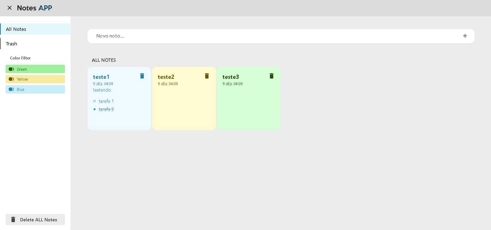
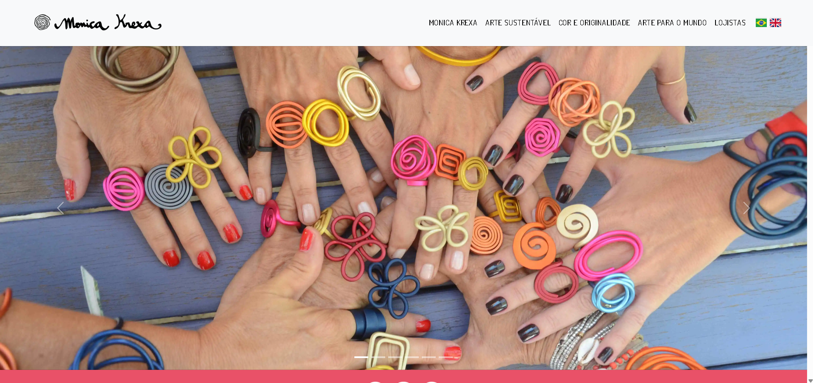

Porfólio
Projetos
-
Aplicativo de Bloco de Notas
Permite criar, editar e excluir notas, com checklist e diferentes cores. As notas são salvas no localstorage.

-
Site da marca Monica Krexa
Site com slides, imagens, login, e mais, ilustrando a diversidade e os produtos da marca de joalheria moderna Monica Krexa.
